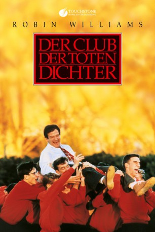

#38 Der Club der toten Dichter
Alternativ: Dead Poets Society
Auszeichnungen: 1 Oscars gewonnen für 3 Oscars nominiert 2 BAFTA-Awards gewonnen
 
 IMDB-Wertung: 8.1 / 10
IMDB-Wertung: 8.1 / 10  IMDB-TOP-Platzierung: 224
IMDB-TOP-Platzierung: 224  Metascore: 79
Metascore: 79 
Der neue Literaturlehrer John Keating bringt 1959 frischen Wind in das Traditionsinternat Welton und inspiriert seine ansonsten zur Disziplin erzogenen Schüler durch sein unorthodoxes Vermitteln von Poesie zu freiem Denken. Des Nachts treffen sie sich zu Lesungen in einer alten Höhle. Der Junge Neil entdeckt seine Liebe zur Schauspielerei. Als sein gestrenger Vater davon erfährt, nimmt er Neil von der Schule. Seiner Träume beraubt, erschießt sich Neil. Keating wird verantwortlich gemacht und der Schule verwiesen. Als er seine Bücher abholt, sprechen ihm seine Schüler durch kollektive Verweigerung ihren Dank für seine Menschlichkeit aus.
Jahr: 1989
Dauer: 128 Minuten
FSK: 12
Land: USA Studio: Buena Vista PicturesTonspuren: DD5.1 - ,
Untertitel:
Auflösung: 1080p (1920×1040) Größe: 10137 MB
Genre: Komödie, Drama
Regisseur:  Peter Weir
Peter Weir
Drehbuch: Tom Schulman
Soundtrack: Maurice Jarre
Darsteller:
 Robin Williams als John Keating
Robin Williams als John Keating- Robert Sean Leonard als Neil Perry
 Ethan Hawke als Todd Anderson
Ethan Hawke als Todd Anderson Josh Charles als Knox Overstreet
Josh Charles als Knox Overstreet Dylan Kussman als Richard Cameron
Dylan Kussman als Richard Cameron- Allelon Ruggiero als Steven Meeks
- James Waterston als Gerard Pitts
 Norman Lloyd als Mr. Nolan
Norman Lloyd als Mr. Nolan Kurtwood Smith als Mr. Perry
Kurtwood Smith als Mr. Perry Kevin Cooney als Joe Danburry
Kevin Cooney als Joe Danburry Lara Flynn Boyle als Ginny Danburry , scenes deleted
Lara Flynn Boyle als Ginny Danburry , scenes deleted- Alexandra Powers als Chris Noel
 Melora Walters als Gloria
Melora Walters als Gloria Welker White als Tina
Welker White als Tina John Cunningham als Mr. Anderson
John Cunningham als Mr. Anderson- Debra Mooney als Mrs. Anderson
- James Donnell Quinn als Procession Alumnus
- Barry Godin als Language Teacher , uncredited
- Kate Kearney-Patch als Mother in Opening Scene , uncredited
 Jamie Kennedy als (uncredited
Jamie Kennedy als (uncredited- Gale Hansen als Charlie Dalton
- Carla Belver als Mrs. Perry
- Leon Pownall als McAllister
 George Martin als Dr. Hager
George Martin als Dr. Hager- Joe Aufiery als Chemistry Teacher
- Matt Carey als Hopkins
- Jane Moore als Mrs. Danburry
- Colin Irving als Chet Danburry
- Steve Mathios als Steve
- Alan Pottinger als Bubba
- Pamela Burrell als Directing Teacher
- Allison Hedges als Actor / Fairy
- Christine D'Ercole als Titania
- John Martin Bradley als Bagpiper
- Charles Lord als Mr. Dalton
- Kurt Leitner als Lester
- Richard Stites als Stick
- James J. Christy als Spaz
- Catherine Soles als Stage Manager
- Hoover Sutton als Welton Professor
- Simon Mein als Welton Vicar
- Ashton W. Richards als Physical Education Teacher
- Robert Gleason als Father of Spaz
- Bill Rowe als Dormitory Porter
- Robert J. Zigler III als Beans
- Keith Snyder als Russell
- Nicholas K. Gilhool als Shroom
- Jonas Stiklorius als Jonas
- Craig Johnson als Dewey
- Chris Hull als Ace
Datei: X:\1989\Club der toten Dichter, Der (1989, FSK12, 1920x1040).mkv seit 02.02.2015
Festplatte: HD 1987-1991
 Es gibt insgesamt 54 Filme in der Gruppe '1989'
Es gibt insgesamt 54 Filme in der Gruppe '1989'